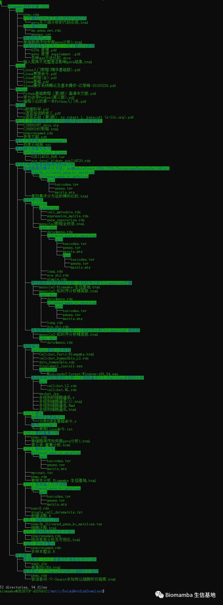

小破号粉丝破万啦,限时送一波资料
原文：https://mp.weixin.qq.com/s?__biz=MzAwMzIzOTk5OQ==&mid=2247490843&idx=1&sn=12f6bca0e41793795b2812a6346fa559&chksm=9b3f644bac48ed5d70578a678bbfcb341bc5e0d9e955498cf16dfa9c0b778098d11e0d665be4#rd 合集：送周边

咱的小破号

 盼望着，盼望着，第一万个粉丝来了，小破号看的人变多了。
本公众号原先是用于我的个人学习记录，本意是权当作笔记本 ，去年这会还是区区几百个用户，没想到时至今日，也算是有人看了。没别的才艺，给大家表演个送资料吧，以下是建号以来精心整理的资料，共52 个文件夹、94 个文件。如今限时送给大家，如果你看到的时候不幸超时了，那就只有文末后台/文末客服微信处回复"2022合辑 "领取啦。链接：https://pan.baidu.com/s/1dyY1M2xZcbj4Zz0QY0od3A?pwd=4x62
盼望着，盼望着，第一万个粉丝来了，小破号看的人变多了。
本公众号原先是用于我的个人学习记录，本意是权当作笔记本 ，去年这会还是区区几百个用户，没想到时至今日，也算是有人看了。没别的才艺，给大家表演个送资料吧，以下是建号以来精心整理的资料，共52 个文件夹、94 个文件。如今限时送给大家，如果你看到的时候不幸超时了，那就只有文末后台/文末客服微信处回复"2022合辑 "领取啦。链接：https://pan.baidu.com/s/1dyY1M2xZcbj4Zz0QY0od3A?pwd=4x62

-Biomamba

资料目录


如何联系我们
 公众号后台中消息更新不及时，超过48h后便不允许回复读者消息，这里给大家留一下领取资料、咨询服务器的微信号 ，方便大家随时交流、提建议（由助理接待）。此外呼声一直很高的交流群也建好了，欢迎大家入群讨论：你们要的微信、交流群，来了！
大家可以阅读完这几篇之后添加笑一笑也就算了如何搜索公众号过往发布内容
公众号后台中消息更新不及时，超过48h后便不允许回复读者消息，这里给大家留一下领取资料、咨询服务器的微信号 ，方便大家随时交流、提建议（由助理接待）。此外呼声一直很高的交流群也建好了，欢迎大家入群讨论：你们要的微信、交流群，来了！
大家可以阅读完这几篇之后添加笑一笑也就算了如何搜索公众号过往发布内容